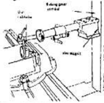
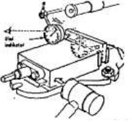

<?xml version="1.0" encoding="UTF-8"?>
<!DOCTYPE html PUBLIC "-//W3C//DTD XHTML 1.0 Transitional//EN" "http://www.w3.org/TR/xhtml1/DTD/xhtml1-transitional.dtd">
<html lang="en" xml:lang="en" xmlns="http://www.w3.org/1999/xhtml">
<!-- Created using eXe: http://exelearning.org -->
<head>
<link rel="stylesheet" type="text/css" href="base.css" /><link rel="stylesheet" type="text/css" href="content.css" /><link rel="stylesheet" type="text/css" href="nav.css" /><title>1.  Pengesetan Ragum </title>
<link rel="shortcut icon" href="favicon.ico" type="image/x-icon" />
<meta http-equiv="Content-Type" content="text/html;  charset=utf-8" />
<script type="text/javascript" src="common.js"></script>
</head>
<body>
<div id="content">
<div id="emptyHeader"></div><div id="siteNav">
<ul>
<li><a href="index.html" class="daddy main-node">Pengesetan Mesin Bubut dan Frais</a></li><li id="active"><a href="1__pengesetan_ragum.html" class="active daddy">1.  Pengesetan Ragum</a><ul>
<li><a href="2__penjelasan_langkahlangkah_penjepitan_benda_kerja_pada_ragum.html" class="no-ch">2.  Penjelasan langkah-langkah penjepitan benda kerja pada ragum</a></li>
</ul>
</li>
<li><a href="2_pelat_siku.html" class="no-ch">2. PELAT SIKU</a></li>
<li><a href="3__block_v.html" class="no-ch">3.  BLOCK V</a></li>
<li><a href="4__chuck.html" class="no-ch">4.  CHUCK</a></li>
<li><a href="5__klempenahan.html" class="no-ch">5.  KLEM/PENAHAN.</a></li>
<li><a href="6__meja_putar.html" class="daddy">6.  MEJA PUTAR.</a><ul class="other-section">
<li><a href="i__memasang_meja_putar_.html" class="no-ch">I.  Memasang meja putar :</a></li>
</ul>
</div>
<div id='topPagination'><div class="pagination noprt"><a href="index.html" class="prev"><span>&laquo; </span>Previous</a> | <a href="2__penjelasan_langkahlangkah_penjepitan_benda_kerja_pada_ragum.html" class="next"> Next<span> &raquo;</span></a></div>
</div><div id="main">
<div id="nodeDecoration"><h1 id="nodeTitle">1.  Pengesetan Ragum</h1></div>
<div class="activityIdevice" id="id1">
<div class="iDevice emphasis1">

<h2 class="iDeviceTitle"></h2>
<div class="iDevice_inner">
<div id="ta1_89_2" class="block" style="display:block;position:relative"><ul style="list-style-type: circle;">
<li>Bersihkan ragum dan permukaan meja mesin.</li>
<li>Luruskan alur baut ragum di pertengahan alur meja.</li>
<li>Berikan kebebasan antara baut-baut ragum, agar bisa disetel</li>
</ul>
<p></p>
<ul style="list-style-type: circle;">
<li>Kencangkan salah satu baut pengikat (jangan terlalu keras).</li>
<li>Pasang/jepit parallel pada mulut ragum. </li>
<li>Pasang dial indicator.</li>
</ul>
<p></p>
<ul style="list-style-type: circle;">
<li>Gerakkan&nbsp; meja&nbsp; bolak-balik&nbsp; ke&nbsp; arah&nbsp; memanjang&nbsp; sampai peraba&nbsp; dial&nbsp; indicator&nbsp; mencapai&nbsp; ujungujung rahang. Periksa skala yang tertujukan oleh jarum dial.</li>
<li>Ketok sisi badan ragum untuk memperbaiki kesalahannya.</li>
</ul>
<p></p>
<ul style="list-style-type: circle;">
<li> Kencangkan baut pengikat, periksa lagi kelurusannya.</li>
</ul>
<p>&nbsp;</p></div></div>
</div>
</div>
<div id='bottomPagination'><div class="pagination noprt"><a href="index.html" class="prev"><span>&laquo; </span>Previous</a> | <a href="2__penjelasan_langkahlangkah_penjepitan_benda_kerja_pada_ragum.html" class="next"> Next<span> &raquo;</span></a></div>
</div></div>
</div>
</body></html>
